En betalingstjeneste er en finansiell tjeneste som muliggjør igangsetting, behandling eller fullføring av betalingstransaksjoner mellom betaler og betalingsmottaker. I det moderne digitale betalingslandskapet omfatter dette alt fra tradisjonelle bankoverføringer til avanserte elektroniske tjenester som PIS (Payment Initiation Services) og AIS (Account Information Services) under PSD2-direktivet.
Betalingstjenester er fundamentet for all kommersiell aktivitet og regnskapsmessig dokumentasjon i moderne næringsliv. De påvirker direkte hvordan bedrifter håndterer kundefordringer, leverandørgjeld og generell likviditetsstyring.
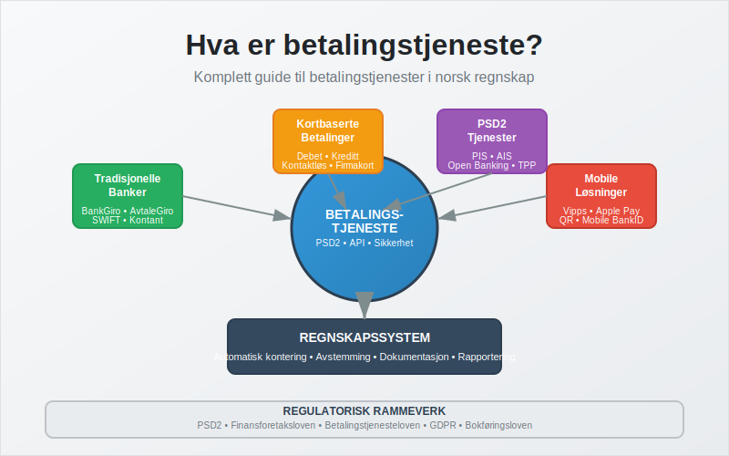
Seksjon 1: Definisjon og Grunnleggende Konsepter
Betalingstjenester defineres i EU’s betalingstjenestedirektiv (PSD2) og implementert i norsk lov gjennom finansforetaksloven og betalingstjenesteloven. En betalingstjeneste er enhver tjeneste som:
- Iverksetter betalinger: Starter betalingstransaksjoner på vegne av en betaler
- Behandler betalinger: Formidler og prosesserer betalingsinstruksjoner
- Fullfører betalinger: Sikrer at betalingen når frem til mottaker
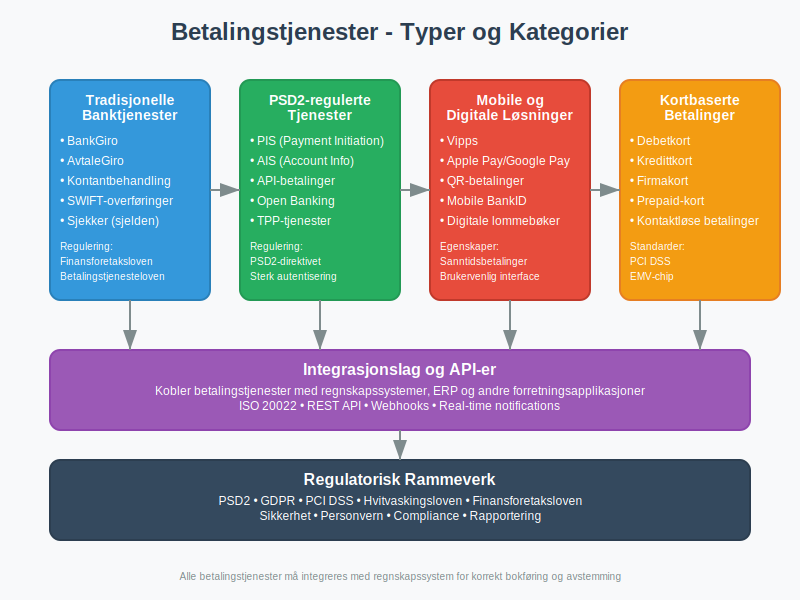
Juridisk Rammeverk
I Norge reguleres betalingstjenester primært av:
- Finansforetaksloven: Hovedloven for finansielle tjenester
- Betalingstjenesteloven: Spesifikk regulering av betalingstjenester
- PSD2-direktivet: EU-direktiv implementert i norsk lov
- Hvitvaskingsloven: Krav til kundekontroll og rapportering
Disse reguleringene sikrer at betalingstjenester oppfyller standarder for sikkerhet, transparens og forbrukerbeskyttelse, noe som er essensielt for korrekt regnskapsføring og internkontroll.
Seksjon 2: Kategorier av Betalingstjenester
I henhold til PSD2 og norsk lovgivning kan betalingstjenester kategoriseres på flere måter. Dette er viktig for regnskapsmessig behandling og kontering.
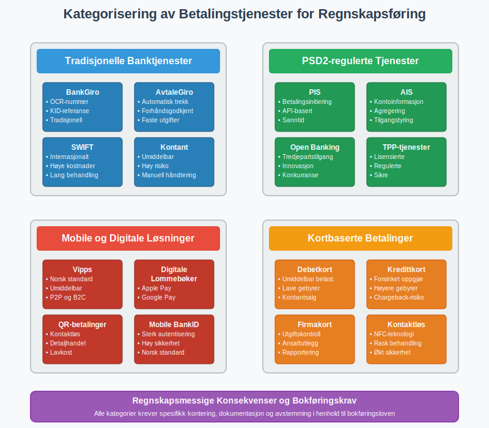
2.1 Tradisjonelle Banktjenester
Disse omfatter tjenester som har vært tilgjengelige gjennom banker i årtier:
| Tjenestetype | Norske Eksempler | Regnskapsmessig Behandling |
|---|---|---|
| BankGiro | Tradisjonelle bankoverføringer | Bokføres når transaksjonen registreres i bankkonto |
| AvtaleGiro | Automatisk trekk av faste utgifter | Krever forhåndsgodkjenning og systematisk oppfølging |
| Sjekker | Sjelden brukt i Norge i dag | Bokføres ved utstedelse, ikke ved innløsning |
| Kontantbehandling | Bankinnskudd, uttak | Krever umiddelbar registrering og avstemming |
2.2 PSD2-regulerte Tjenester
Disse moderne tjenestene er spesifikt regulert under det europeiske betalingstjenestedirektivet:
PIS (Payment Initiation Services):
- Tjenester som initierer betalinger på vegne av brukere
- Eksempler: API-baserte betalingsløsninger, “Pay by Bank”-knapper
- Regnskapsmessig: Behandles som banktransaksjoner
AIS (Account Information Services):
- Tjenester som samler kontoinformasjon fra flere banker
- Eksempler: Personlig økonomi-apper, regnskapsintegrasjoner
- Regnskapsmessig: Påvirker ikke direkte bokføring, men forbedrer avstemming
2.3 Mobile og Digitale Betalingsløsninger
Disse har revolusjonert betalingslandskapet de siste årene:
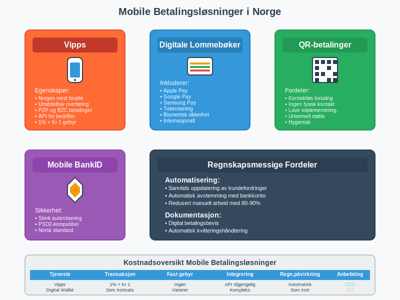
Norske Mobile Betalingstjenester:
- Vipps: Den dominerende mobile betalingsløsningen i Norge
- Mobile BankID-betalinger: Integrert med norske banker
- QR-kodebetalinger: Økende popularitet i detaljhandel
Internasjonale Løsninger:
- Apple Pay / Google Pay: Digitale lommebøker koblet til kort
- PayPal: Internasjonal e-handelstjeneste
- Stripe / Klarna: Betalingsformidlere for e-handel
2.4 Kortbaserte Betalingstjenester
Kortbetalinger utgjør en betydelig del av moderne handelstransaksjoner:
| Korttype | Behandling | Regnskapsmessige Hensyn |
|---|---|---|
| Debetkort | Umiddelbar belastning | Behandles som kontantsalg i datakasse |
| Kredittkort | Forsinket oppgjør | Krever oppfølging av terminoppgjør og gebyrer |
| Firmakort | Bedriftsspesifikke kort | Viktig for ansattutlegg og utgiftskontroll |
Seksjon 3: Teknisk Infrastruktur og Integrasjon
Den tekniske infrastrukturen bak betalingstjenester har utviklet seg dramatisk de siste årene. Moderne betalingssystemer bygger på komplekse nettverk av banker, betalingsformidlere og teknologileverandører.
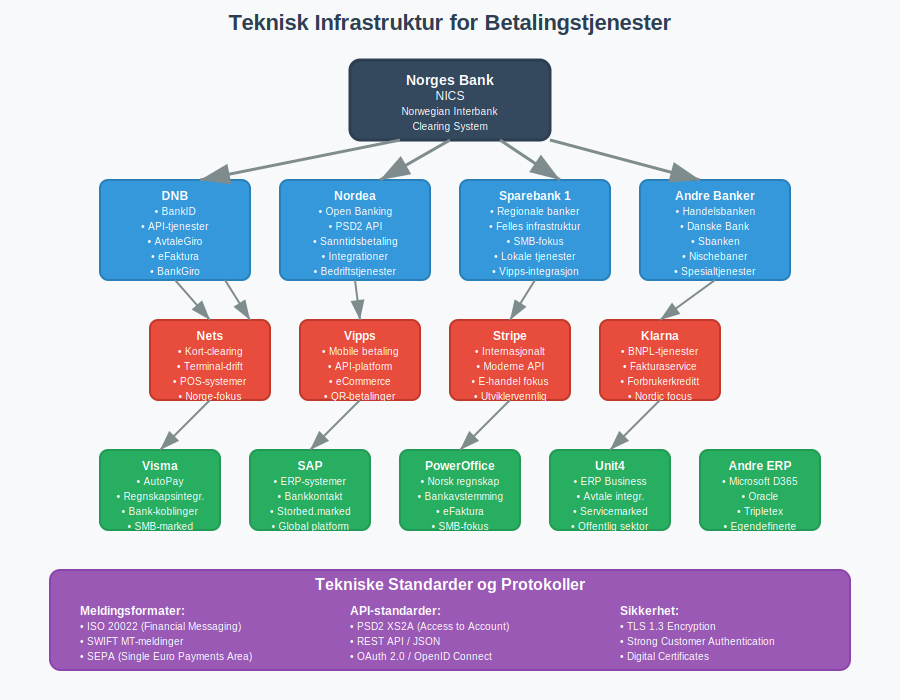
3.1 Betalingsinfrastruktur i Norge
Norges Bank:
- Driver NICS (Norwegian Interbank Clearing System)
- Håndterer oppgjør mellom banker
- Sentral for alle større betalingstransaksjoner
Nets (tidligere BBS):
- Hovedaktør for kortbetalinger i Norge
- Driver mye av infrastrukturen for datakasser
- Integrert med de fleste regnskapssystemer
Bankenes rolle:
- Tilbyr API-er for elektronisk fakturering
- Integrerer med eFaktura og AvtaleGiro
- Tilbyr bedriftsrettede betalingsløsninger
3.2 API-integrasjon med Regnskapssystemer
Moderne betalingstjenester integreres direkte med regnskapssystemer gjennom API-er:
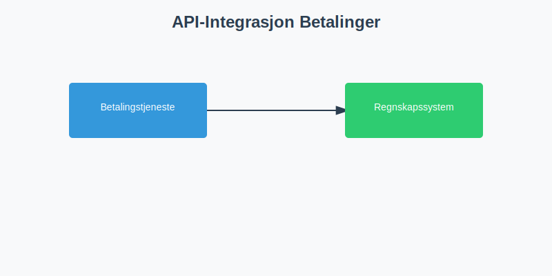
Fordeler med automatisert integrasjon:
- Reduserer manuell dataregistrering med opptil 90%
- Minimerer feil i bilagsføring
- Sikrer sanntids avstemming
- Forbedrer kontantstrømstyring
Tekniske standarder:
- ISO 20022: Internasjonal standard for finansielle meldinger
- PSD2 API-standarder: Sikrer interoperabilitet
- Open Banking: Fremmer innovasjon og konkurranse
Seksjon 4: Regnskapsføring av Betalingstjenester
Korrekt regnskapsføring av betalingstjenester er avgjørende for god regnskapsskikk og etterlevelse av juridiske krav.
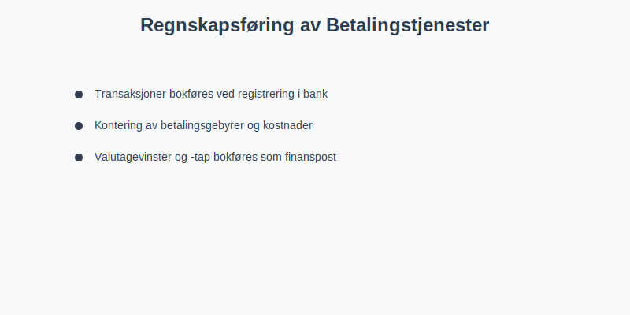
4.1 Grunnleggende Bokføringsprinsipper
Transaksjonstidspunkt:
- Betalinger bokføres når de registreres i bankkonto
- For kortbetalinger: Ved terminoppgjør, ikke ved salg
- Mobile betalinger: Vanligvis samme dag eller neste virkedag
Kontering av betalingsgebyrer:
| Gebyrtype | Kontotype | Eksempel Kontonummer |
|---|---|---|
| Kortgebyrer | Finanskostnad | 8050 - Kortgebyrer |
| Bankgebyrer | Finanskostnad | 8070 - Bankgebyrer |
| Vipps-gebyrer | Finanskostnad | 8051 - Mobile betalingsgebyrer |
| API-kostnader | Driftskostnad | 6940 - IT-tjenester |
4.2 Spesielle Regnskapsmessige Utfordringer
Valutabetalinger:
- Må håndtere valutakurssvingninger
- Bokføres til kursen på transaksjonstidspunktet
- Kursgevinster/-tap skal bokføres som finanspost
Forskuddsbetalinger:
- Forskuddsbetalinger via betalingstjenester
- Krever spesiell oppfølging og periodisering
Tilbakebetaling og reversering:
- Chargebacks fra kortselskaper
- Feilbetalinger som må korrigeres
- Kan kreve bruk av kreditnotaer
4.3 Dokumentasjonskrav
I henhold til bokføringsloven må alle betalingstransaksjoner dokumenteres:
Obligatorisk dokumentasjon:
- Betalingsbevis fra betalingstjeneste
- Avtaler med betalingsleverandører
- API-logger og transaksjonshistorikk
- Gebyrspesifikasjoner og terminoppgjør
Oppbevaringstid:
- Minimum 5 år for regnskapsbilag
- 10 år for kontrakter og avtaler
- Permanent oppbevaring for API-sikkerhetssertifikater
Seksjon 5: Sikkerhet og Risikostyring
Betalingstjenester håndterer sensitive finansielle data og er derfor underlagt strenge sikkerhetskrav. Dette påvirker også regnskapsmessige kontroller og internkontrollsystemer.
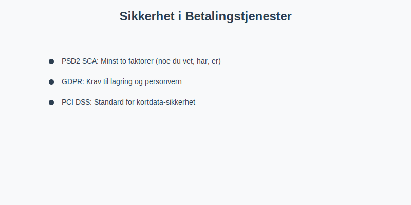
5.1 Regulatoriske Sikkerhetskrav
PSD2 Sterk Kundeautentisering (SCA):
- Minst to av følgende faktorer: noe du vet, noe du har, noe du er
- Påvirker hvordan betalinger initieres og dokumenteres
- Viktig for sporbarhet i regnskapet
GDPR og Personvern:
- Strenge krav til hvordan betalingsdata lagres
- Påvirker oppbevaring av regnskapsbilag
- Krever dokumenterte prosedyrer for datasletting
PCI DSS (Payment Card Industry Data Security Standard):
- Obligatorisk for alle som håndterer kortdata
- Påvirker datakassesystemer
- Krever regelmessige sikkerhetstester
5.2 Operasjonelle Sikkerhetsrisikoer
Tekniske risikoer:
- API-sikkerhet og tilgangskontroll
- Nettverksikkerhet og kryptering
- Systemtilgjengelighet og backup
Prosessrisikoer:
- Manglende avstemming av betalinger
- Utilstrekkelig internkontroll
- Svak adgangsstyring til betalingssystemer
Finansielle risikoer:
- Likviditetsrisiko ved forsinkede oppgjør
- Valutarisiko for internasjonale betalinger
- Kredittrisiko ved forskuddsbetalinger
5.3 Kontrollmiljø og Beste Praksis
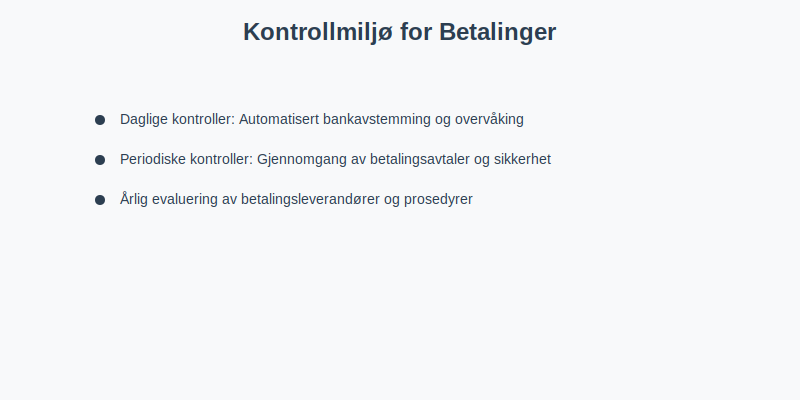
Daglige kontroller:
- Automatisert bankavstemming
- Overvåking av feilede transaksjoner
- Kontroll av gebyrer og terminoppgjør
Periodiske kontroller:
- Månedlig gjennomgang av betalingsavtaler
- Kvartalsvis gjennomgang av sikkerhetsprosedyrer
- Årlig evaluering av betalingsleverandører
Seksjon 6: Integrasjon og Automatisering
Moderne betalingstjenester muliggjør høy grad av automatisering i regnskapsprosesser. Dette forbedrer både effektivitet og nøyaktighet.
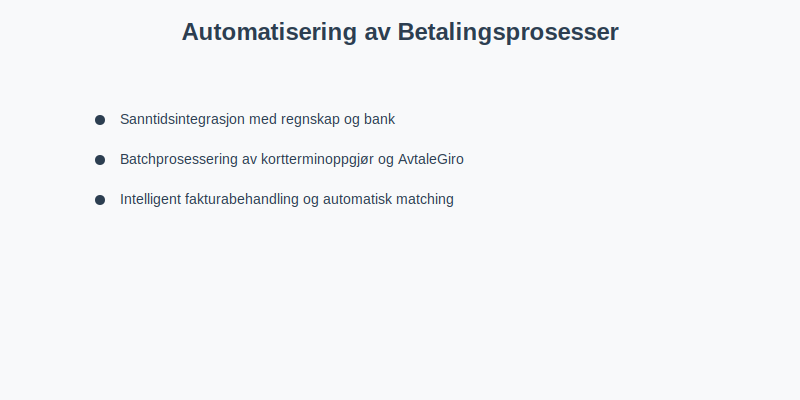
6.1 API-basert Integrasjon
Effektiv bruk av API-integrasjon transformerer regnskapsarbeid:
Sanntidsintegrasjon:
- Umiddelbar oppdatering av kundefordringer
- Automatisk avstemming av banktransaksjoner
- Direkte kobling mellom salg og betalingsmottak
Batchprosessering:
- Daglig import av kortterminoppgjør
- Ukentlig prosessering av AvtaleGiro-transaksjoner
- Månedlig avstemming av gebyrposter
6.2 Intelligent Fakturabehandling
Betalingstjenester kan integreres med automatisert fakturabehandling:
Automatisk matching:
- KID-nummer kobler betalinger til fakturaer
- OCR-nummer sikrer korrekt kundeoppfølging
- Automatisk oppdatering av kundefordringer
Varslingssystemer:
- Automatiske påminnelser for forfalte betalinger
- Varsler ved mislykkede betalingsforsøk
- Rapporter om avvik i betalingsmønster
Seksjon 7: Kostnadsanalyse og Optimalisering
Forståelse av kostnadene ved ulike betalingstjenester er viktig for både budsjettarbeid og løpende kostnadskontroll.
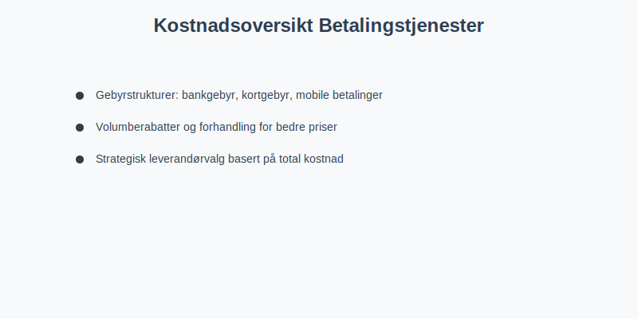
7.1 Gebyrstrukturer
Tradisjonelle Bankgebyrer:
- Fast månedsgebyr for bedriftskonto: Kr 200-800
- Transaksjonsgebyr: Kr 1-5 per overføring
- Internasjonale overføringer: Kr 50-200 + valutapåslag
Kortbetalingsgebyrer:
- Debetkort (nasjonalt): 0.3-0.7% av beløp
- Kredittkort (nasjonalt): 0.8-1.5% av beløp
- Internasjonale kort: 1.5-3.5% av beløp
- Fast terminalgebyr: Kr 150-500 per måned
Mobile Betalingstjenester:
- Vipps for bedrifter: 1% + Kr 1 per transaksjon
- Apple Pay/Google Pay: Lignende kortgebyr + teknisk integrasjon
- QR-betalinger: Varierer mellom 0.5-2% avhengig av leverandør
7.2 Optimalisering av Betalingskostnader
Strategisk leverandørvalg:
- Sammenlign totalkostnader, ikke bare transaksjonsgebyrer
- Vurder integrasjonskostnader og tidsinvestering
- Evaluer kundeservice og teknisk support
Volumberabatter:
- Forhandl rabatter basert på månedlig volum
- Vurder årlige avtaler for bedre priser
- Konsolider betalingsvolum hos færre leverandører
Seksjon 8: Spesielle Situasjoner og Utfordringer
8.1 Internasjonale Betalinger
Internasjonale betalingstjenester bringer ekstra kompleksitet:
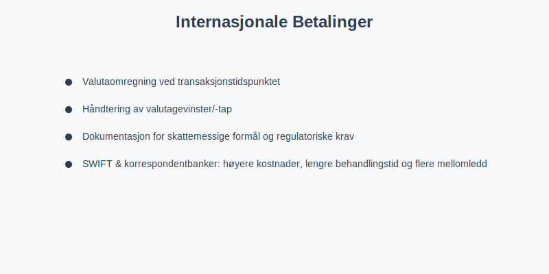
Regnskapsmessige utfordringer:
- Valutaomregning ved transaksjonstidspunktet
- Håndtering av valutagevinster/-tap
- Dokumentasjon for skattemessige formål
- Overholdelse av utenlandske regulatoriske krav
SWIFT og korrespondentbanker:
- Høyere kostnader og lengre behandlingstid
- Flere mellomledd øker risiko for feil
- Viktig med god dokumentasjon for revisjon
8.2 E-handelsspesifikke Utfordringer
Chargebacks og tvister:
- Kunder kan bestride kortbetalinger
- Krever reservasjoner i regnskapet
- Påvirker tap på fordringer
Abonnementstjenester:
- Kompleks håndtering av uopptjent inntekt
- Automatiske belastninger krever robust feilhåndtering
- Refusjonshåndtering ved avbrudd
8.3 Regulatoriske Endringer
Kommende EU-regulering:
- Digital Services Act (DSA)
- Markets in Crypto-Assets (MiCA)
- Digital Operational Resilience Act (DORA)
Norske tilpasninger:
- Implementering av EU-direktiver
- Endringer i skattelovgivning
- Nye krav til rapportering
Seksjon 9: Fremtidige Trender og Teknologisk Utvikling
Betalingslandskapet endrer seg raskt, og bedrifter må være forberedt på kommende teknologiske skifter.
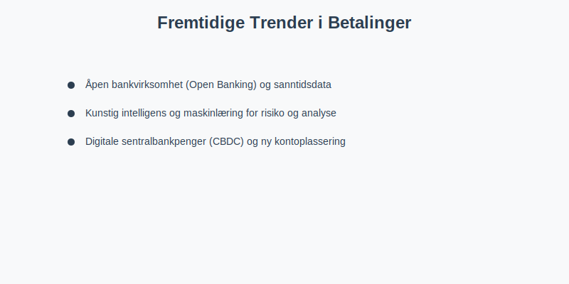
9.1 Åpen Bankvirksomhet (Open Banking)
Nye muligheter:
- Direkte integrasjon mellom regnskapssystem og banker
- Sanntids kontantstrømanalyse
- Automatisert likviditetsstyring
Regnskapsmessige fordeler:
- Eliminerer behov for manuell bankavstemming
- Forbedrer nøyaktighet i kontantstrømoppdateringer
- Muliggjør prediksjon av betalingsevne
9.2 Kunstig Intelligens og Maskinlæring
Intelligent betalingsanalyse:
- Automatisk kategorisering av transaksjoner
- Prediksjon av betalingsmønstre
- Identifikasjon av suspekte transaksjoner
Forbedret risikostyring:
- AI-basert svindeldeteksjon
- Intelligent kredittrisikoevaluering
- Automatisert compliance-overvåking
9.3 Digitale Sentralbankpenger (CBDC)
Norges Bank sin forskning:
- Pilot med digital norsk krone
- Potensielt påvirker alle betalingstjenester
- Kan revolusjonere regnskapsrapportering
Implikasjoner for regnskap:
- Nye kontotyper og klassifiseringer
- Sanntids skatteinnrapportering
- Endret behov for avstemming
Seksjon 10: Beste Praksis og Implementering
10.1 Strategisk Planlegging
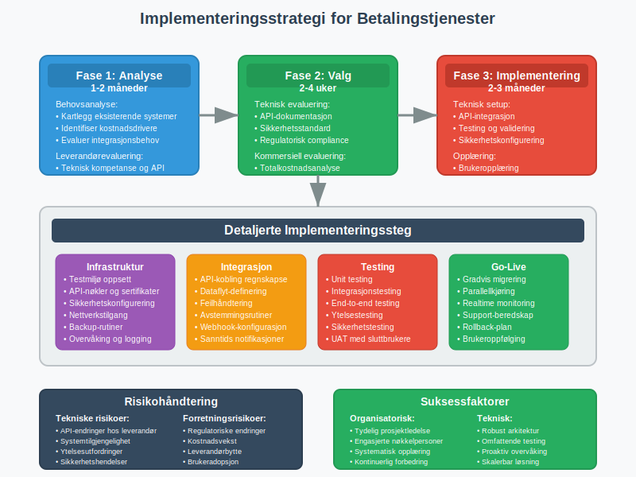
Behovsanalyse:
- Kartlegg eksisterende betalingsstrømmer
- Identifiser ineffektiviteter og kostnadsdrivere
- Evaluer integrasjonsmuligheter med regnskapssystem
- Vurder fremtidige vekstplaner
Leverandørevaluering:
- Teknisk kompetanse: API-kvalitet og dokumentasjon
- Regulatorisk etterlevelse: PSD2, GDPR, lokale krav
- Kostnadsstruktur: Transparente priser uten skjulte gebyrer
- Support og service: Tilgjengelig kundeservice på norsk
10.2 Implementeringsprosess
Fase 1: Forberedelse (1-2 måneder)
- Opprett testmiljø
- Tren nøkkelpersonell
- Oppdater internkontrollrutiner
- Etabler backup-prosedyrer
Fase 2: Pilot (1 måned)
- Test med begrenset volum
- Verifiser regnskapsintegrasjon
- Kontroller avstemmingsrutiner
- Dokumenter eventuelle justeringer
Fase 3: Full implementering (1-2 måneder)
- Gradvis overgang fra gamle systemer
- Kontinuerlig overvåking av ytelse
- Regelmessig evaluering av prosesser
- Optimalisering basert på erfaring
10.3 Kontinuerlig Forbedring
Månedlig evaluering:
- Gjennomgang av betalingskostnader
- Analyse av feilede transaksjoner
- Vurdering av likviditetspåvirkning
Kvartalsvis optimalisering:
- Benchmarking mot andre leverandører
- Evaluering av nye teknologiske muligheter
- Vurdering av prosesseffektivitet
Årlig strategisk gjennomgang:
- Evaluering av totale betalingskostnader
- Vurdering av leverandørprestasjoner
- Planlegging av fremtidige oppgraderinger
Konklusjon
Betalingstjenester er en kritisk komponent i moderne bedriftsdrift og regnskapsføring. Fra tradisjonelle bankoverføringer til avanserte API-baserte løsninger, påvirker valg av betalingstjenester direkte kontantstrømmen, likviditeten og regnskapsmessige prosesser i enhver bedrift.
Successfull implementering krever grundig planlegging, forståelse av regulatoriske krav som PSD2, og integrasjon med eksisterende regnskapssystemer. Med riktig tilnærming kan moderne betalingstjenester dramatisk forbedre effektiviteten, redusere kostnader og styrke internkontrollen.
Etterhvert som teknologien utvikler seg, vil betalingstjenester bli enda mer integrert med regnskaps- og forretningsprosesser. Bedrifter som investerer i å forstå og optimalisere sine betalingsløsninger i dag, vil være bedre posisjonert for fremtidens digitale handelsmiljø.
For relaterte temaer, se våre guider til elektronisk fakturering, API-integrasjon, banktransaksjoner og betalingstjenestedirektivet.